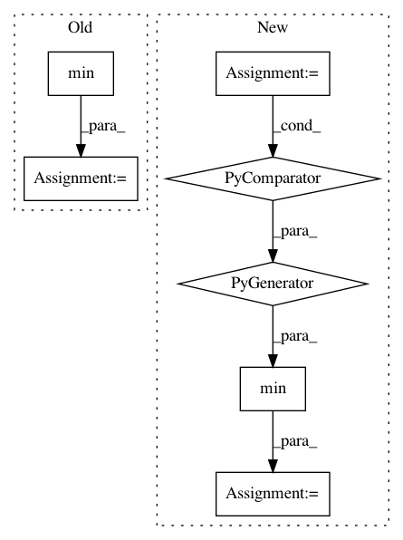

6e4b7e22eeb79f7e1c39d862f10ec3e61e51c979,generate.py,,main,#,20
Before Change
// Max positions is the model property but it is needed in data reader to be able to
// ignore too long sentences
args.max_positions = min(args.max_positions, *(m.decoder.max_positions() for m in models))
// Optimize ensemble for generation
for model in models:
model.make_generation_fast_(not args.no_beamable_mm)
After Change
// Generate and compute BLEU score
scorer = bleu.Scorer(dataset.dst_dict.pad(), dataset.dst_dict.eos(), dataset.dst_dict.unk())
max_positions = min(model.max_encoder_positions() for model in models)
itr = dataset.dataloader(args.gen_subset, batch_size=args.batch_size,
max_positions=max_positions,
skip_invalid_size_inputs_valid_test=args.skip_invalid_size_inputs_valid_test)
num_sentences = 0
In pattern: SUPERPATTERN
Frequency: 3
Non-data size: 7
Instances
Project Name: pytorch/fairseq
Commit Name: 6e4b7e22eeb79f7e1c39d862f10ec3e61e51c979
Time: 2017-11-08
Author: myleott@fb.com
File Name: generate.py
Class Name:
Method Name: main
Project Name: dPys/PyNets
Commit Name: 2fedef89ec6a1d018d879b21b594634944472708
Time: 2020-03-19
Author: dpisner@utexas.edu
File Name: pynets/dmri/estimation.py
Class Name:
Method Name: streams2graph